本次实验的目的在于熟悉递归子程序的使用。利用递归的方法将一个逐步实现较为困难的问题拆分成多次相同的操作，将复杂的问题简单化。在使用递归子程序的同时，加深对于栈这一数据结构的理解，熟悉入栈出栈等基本操作，了解递归程序是如何利用栈来实现的。
正如上面所说，本次实验的关键在于完成递归子程序REMOVE和PUT。其中REMOVE(i)用于将前i个环从板上移除，即将state的前n位由1变为0；而PUT(i)用于将前i个环放到板上，即将state的前n位由0变为1。二者是相反的操作。
所以下面先实现REMOVE：
利用下面的关系式
$ R(0) = nothing , R(1) = remove the 1^{st} ring $
$R(i) = R(i-2) + remove the i^{th} ring + P(i-2) + R(i-1) ,i \geqslant 2$
可以得到REMOVE(n,state)子程序的逻辑如下：
REMOVE(n-2,state)，然后再将state的第n位由0变为1，因为state是二进制数，所以将state加上$2^{n-1}$即可，然后存储操作后的state于特定的存储空间；然后再调用PUT(n-2,state)将state的前n-2位复原为0，最后再调用REMOVE(n-1,state)将state的前n-1位由0变为1。上述过程中所提到的将state存储于特定的存储空间中，需要使用一个全局变量来保存存储的地址，在汇编语言中，可以专门使用一个寄存器来存储。
在实现了REMOVE子程序后，只需要对它做以下修改即可得到PUT子程序：
REMOVE(i)是要将state的前i位由0变成1，而PUT(i)是要将state的前i位由1变成0,所以在PUT子程序里需要将REMOVE子程序中的加法改为减法REMOVE子程序中是
$REMOVE(i-2) + remove the i^{th} ring + P(i-2) + R(i-1) ,i \geqslant 2$，
在PUT子程序中则是
$PUT(i-2) + put the i^{th} ring + R(i-2) + P(i-1) ,i \geqslant 2$在实现了以上两个递归子程序后，在主程序中调用REMOVE子程序即可
因为C语言中已经实现了递归函数，不需要考虑中间的变量的保存，函数的返回等问题，所以先用C语言来描述上面的过程，一方面是可以检测思路的正确性，另一方面是在用汇编语言实现时可以照着C语言来做的对应的修改，使得逻辑上更为清晰。
代码如下：
#include<stdio.h>
#include<math.h>
int REMOVE(int,int);
int PUT(int,int);
int STATE[10000] = {0};//存储每一步操作后的state
int times;//times表示操作的次数
int main(){
int n;/*the value of n in x3100*/
printf("Please input n:");
scanf("%d",&n);
STATE[0] = n;
times = 0;
REMOVE(n,0);
for(int i = 0;i <= times;i++)
printf("%d\n",STATE[i]);
return 0;
}
int REMOVE(int n,int state)
{
if(n==0) return state;/*the state remains*/
if(n==1){
state++;//改变state
STATE[++times] = state;//存储当前操作后的state
return state;
}
state = REMOVE(n-2, state);
state += pow(10,n-1);//将state的第n位变成1(用二进制表示时需要改成加2^(n-1))
STATE[++times] = state;
state = PUT(n-2, state);
state = REMOVE(n-1, state);
return state;
}
int PUT(int n,int state){
if(n == 0) return state;
if(n == 1)
{
state--;//改变state
STATE[++times] = state;//存储当前操作后的state
return state;
}
state = PUT(n-2, state);
state -= pow(10,n-1);
STATE[++times] = state;
state = REMOVE(n-2,state);
state = PUT(n-1, state);
return state;
}
运行结果如下：
n = 3: 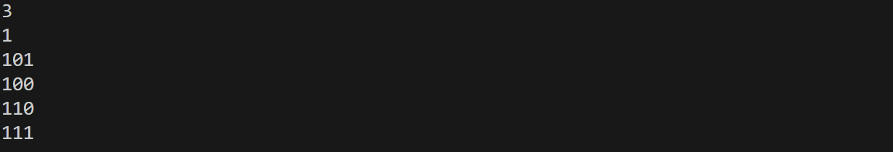 n = 5: 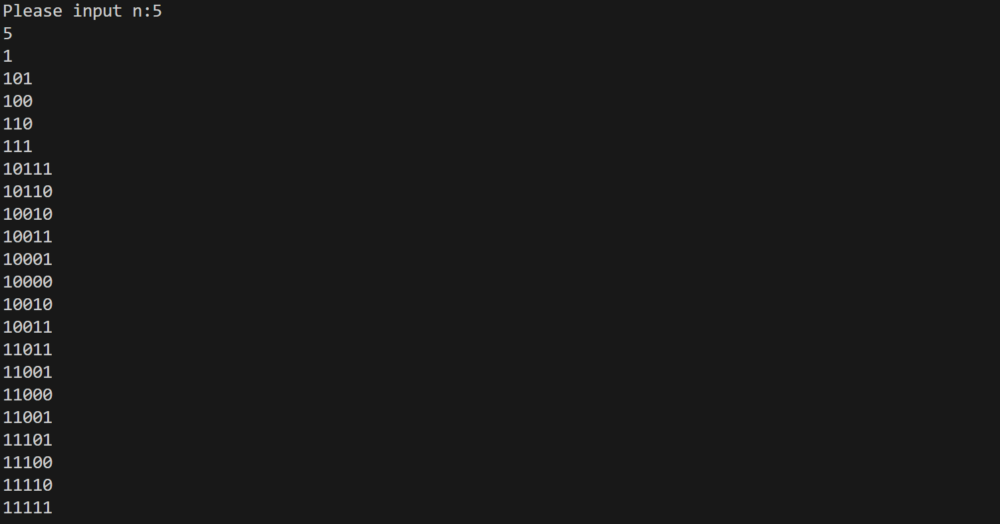
结果正确，说明上述思路正确，然后可以转换为汇编语言。
先画出流程图：
主程序：
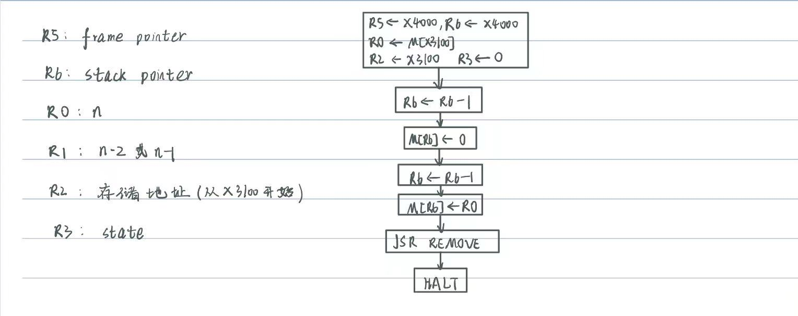
REMOVE子程序
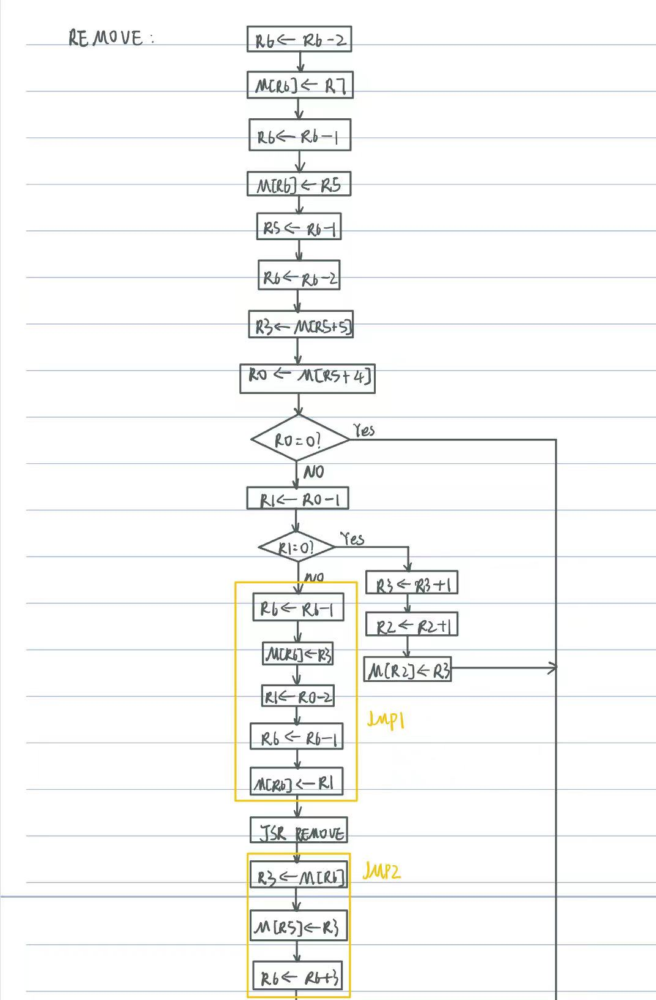
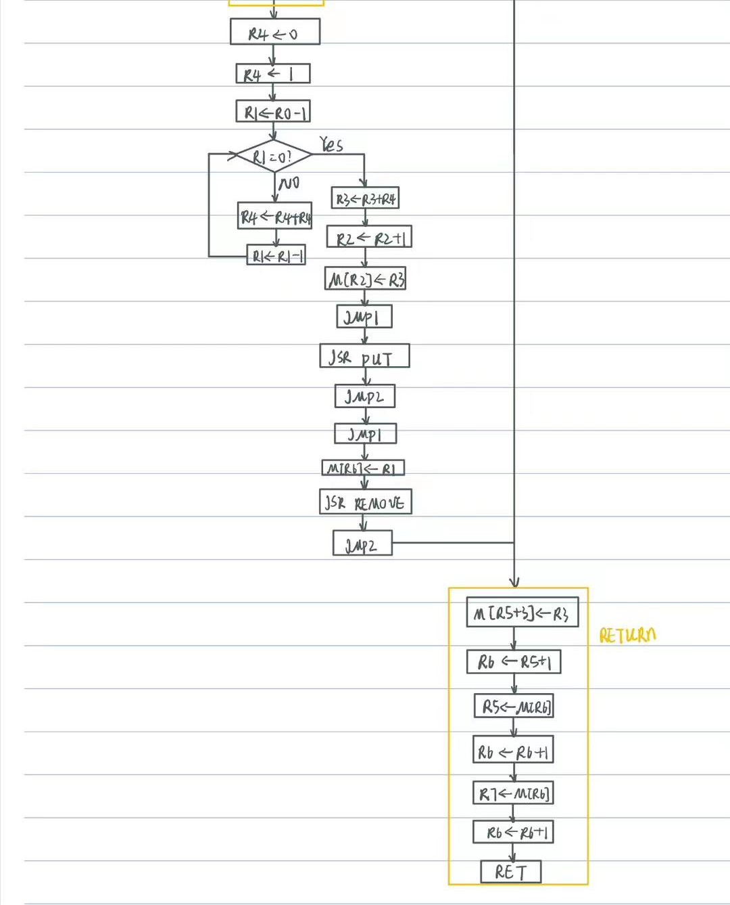
根据上面的流程图可以写出汇编代码。
首先介绍一下各个寄存器的功能：
R0: 用于保存n的值R1: 用于保存n-2或者n-1，因为在REMOVE(n,state)子程序中需要递归调用REMOVE(n-2,state), PUT(n-2,state), REMOVE(n-1,state)，PUT子程序也类似，而在一次调用中n又是固定的，用R0来保存，如果放在内存中每次访存又需要较大的时间代价，所以额外使用一个寄存器R1来存储n-2或n-1R2: 用于保存state的存储地址，因为每次改变state后需要将其存于以x3100为起始位置的连续的存储单元中，所以使用一个寄存器R2来保存存储位置，初始化存储x3100，每次要存储state时先将R2自增1，再存入R2指向的存储单元。R3: 存储state，在每次调用子程序时都需要对state做改变，所以使用一个寄存器R3来存储state，方便操作，改变R3之后将其中的值存入R2指向的内存单元中，并将其存入栈中存储的state位置。R5: frame pointer，构造调用子程序的栈所需要的指针R6: stack pointer，也是调用子程序的栈所需要的指针下面为汇编代码：
;
;本题的关键在于使用栈来构造递归子程序REMOVE和PUT
;
.ORIG x3000
LD R5, BOTTOM ;R5为frame pointer，初始化为x4000
LD R6, BOTTOM ;R6为stack pointer，初始化为x4000
LD R2, START ;R2为存储state的地址，初始化为x3100
LDR R0, R2, #0 ;R0存储n的值
AND R3, R3, #0 ;R3用于存储state
ADD R6, R6, #-1 ;
STR R3, R6, #0 ;state = 0入栈
ADD R6, R6, #-1 ;
STR R0, R6, #0 ;n入栈
JSR REMOVE ;调用REMOVE子程序
BRnzp OVER ;调用完毕后程序结束，不需要处理返回值
REMOVE ADD R6, R6, #-2 ;为返回值预留空间
STR R7, R6, #0 ;保存返回地址
ADD R6, R6, #-1 ;
STR R5, R6, #0 ;保存caller's frame pointer
ADD R5, R6, #-1 ;
ADD R6, R6, #-2 ;为局部变量state和n分配空间
LDR R3, R5, #5 ;R3存储state
LDR R0, R5, #4 ;R0存储n
STR R3, R5, #0 ;存储局部变量state
STR R0, R6, #0 ;存储局部变量n
BRz RETURN1
ADD R1, R0, #-1
BRz STORE1 ;n=1时单独处理
JSR JMP1 ;做子程序调用前的准备
JSR REMOVE ;递归调用，REMOVE(n-2,state)
JSR JMP2 ;做子程序调用后的处理
AND R4, R4, #0
ADD R4, R4, #1 ;R4 <- 1
ADD R1, R0, #-1
JUDGE1 BRnp LOOP1 ;令R4的第n位为1，后面全为0
ADD R3, R3, R4 ;令R3的第n位为1
ADD R2, R2, #1 ;存储地址加1
STR R3, R2, #0 ;存储state
JSR JMP1
JSR PUT ;PUT(n-2,state)
JSR JMP2
JSR JMP1
ADD R1, R1, #1 ;JMP1中令R1 <- R0-2, 这里需要令R1 <- R0-1, 故还需加1
STR R1, R6, #0
JSR REMOVE ;REMOVE(n-1,state)
JSR JMP2 ;JMP1中令R1 <- R0-2, 这里需要令R1 <- R0-1, 故还需加1
BRnzp RETURN1
PUT ADD R6, R6, #-2 ;为返回值预留空间
STR R7, R6, #0 ;保存返回地址
ADD R6, R6, #-1 ;
STR R5, R6, #0 ;保存caller's frame pointer
ADD R5, R6, #-1 ;
ADD R6, R6, #-2 ;为局部变量state和n分配空间
LDR R3, R5, #5 ;R3存储state
LDR R0, R5, #4 ;R0存储n
STR R3, R5, #0 ;存储局部变量state
STR R0, R6, #0 ;存储局部变量n
BRz RETURN1
ADD R1, R0, #-1 ;n=1时单独处理，将最后一位由1变成0
BRz STORE2
JSR JMP1 ;做子程序调用前的准备
JSR PUT ;PUT(n-2,state)
JSR JMP2
AND R4, R4, #0
ADD R4, R4, #1
ADD R1, R0, #-1
JUDGE2 BRnp LOOP2 ;R4的第n位为1，后面全为0
NOT R4, R4
ADD R4, R4, #1 ;将R4取反加1
ADD R3, R3, R4 ;将R3的第n位由1变成0
ADD R2, R2, #1
STR R3, R2, #0
JSR JMP1
JSR REMOVE ;REMOVE(n-2,state)
JSR JMP2
JSR JMP1
ADD R1, R1, #1 ;JMP1中令R1 <- R0-2, 这里需要令R1 <- R0-1, 故还需加1
STR R1, R6, #0
JSR PUT ;PUT(n-1,state)
JSR JMP2
BRnzp RETURN1
LOOP1 ADD R4, R4, R4
ADD R1, R1, #-1
BRnzp JUDGE1
LOOP2 ADD R4, R4, R4
ADD R1, R1, #-1
BRnzp JUDGE2
STORE1 ADD R3, R3, #1 ;最后一位由0变为1
ADD R2, R2, #1 ;存储地址自加1
STR R3, R2, #0 ;
BRnzp RETURN1 ;
STORE2 ADD R3, R3, #-1 ;最后一位由1变为0
ADD R2, R2, #1 ;存储地址自加1
STR R3, R2, #0 ;
BRnzp RETURN1 ;
RETURN1 STR R3, R5, #3
ADD R6, R5, #1
LDR R5, R6, #0
ADD R6, R6, #1
LDR R7, R6, #0
ADD R6, R6, #1
RET
JMP1 ADD R6, R6, #-1 ;
STR R3, R6, #0 ;存储state
ADD R1, R0, #-2 ;R1 = n-2
ADD R6, R6, #-1 ;
STR R1, R6, #0 ;存储n-2
RET
JMP2 LDR R3, R6, #0 ;获得返回值
STR R3, R5, #0 ;存储返回值
LDR R0, R6, #3
ADD R6, R6, #3 ;子程序的返回值和局部变量出栈
RET
START .FILL x3100
BOTTOM .FILL x4000
OVER HALT
.END
实验过程中最难的地方在于调用递归子程序时栈的使用，需要使用栈来保存各个变量的值，返回地址，返回空间等，十分容易混乱。起初我选择了根据脑中所假想的过程来直接写程序，但是总会有遗漏，指针的位置偶尔会有错误，所以最后我选择将栈画出来，入栈出栈等过程一目了然，根据画出来的过程写程序，成功解决了问题。
n = 3: 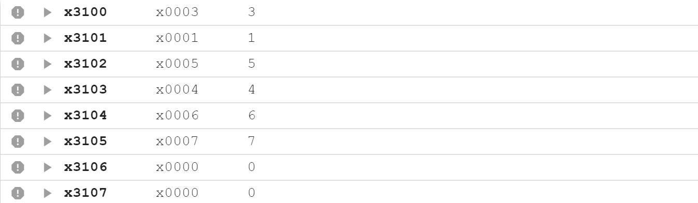
n = 4: 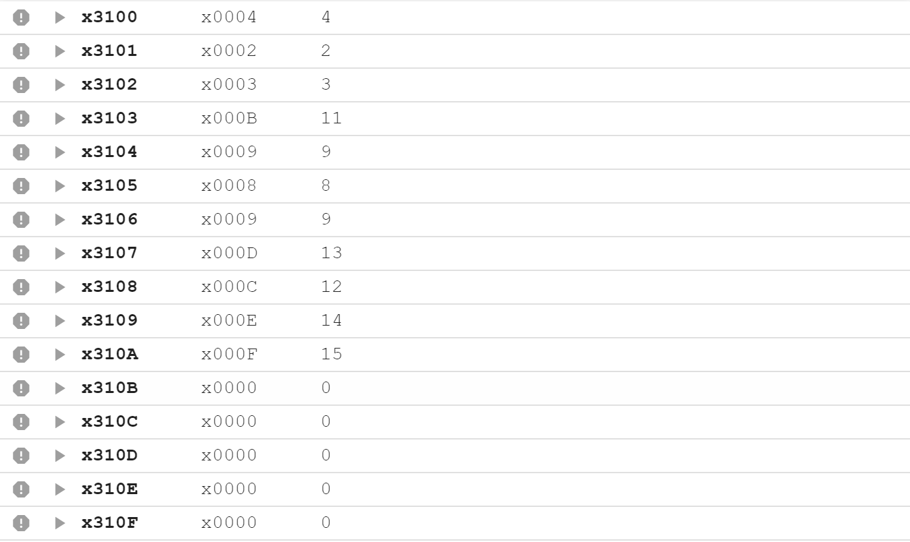
n = 5: 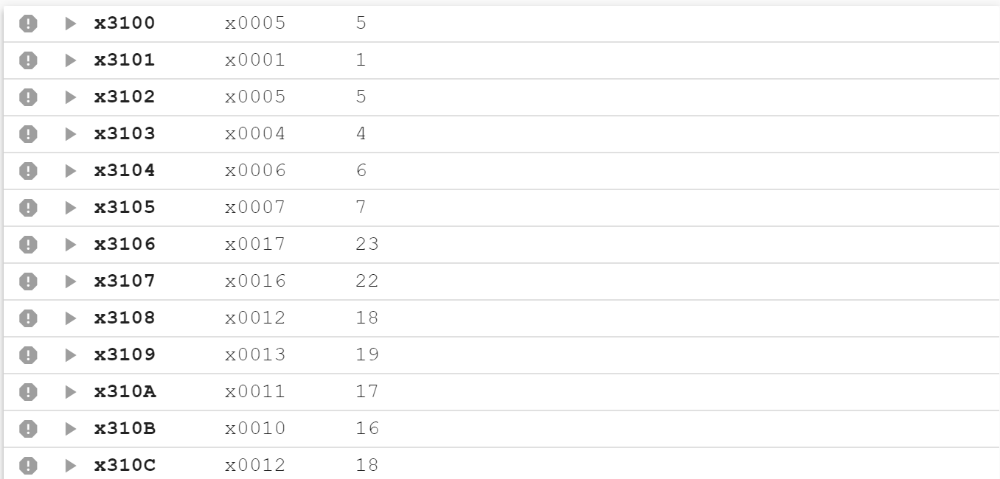 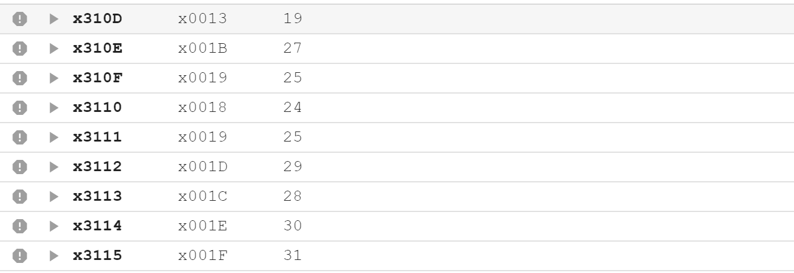
n = 7: 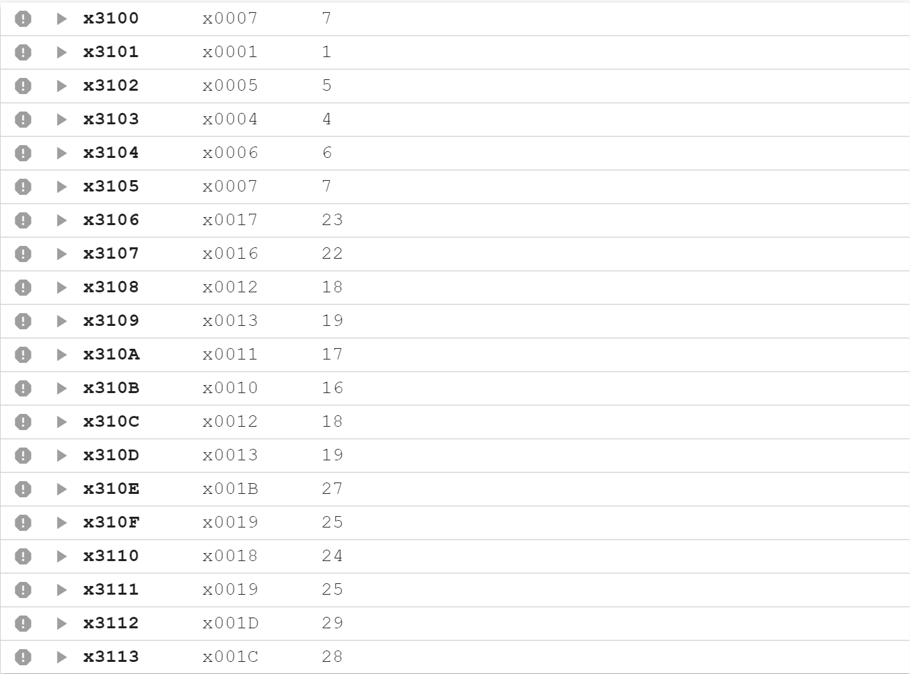 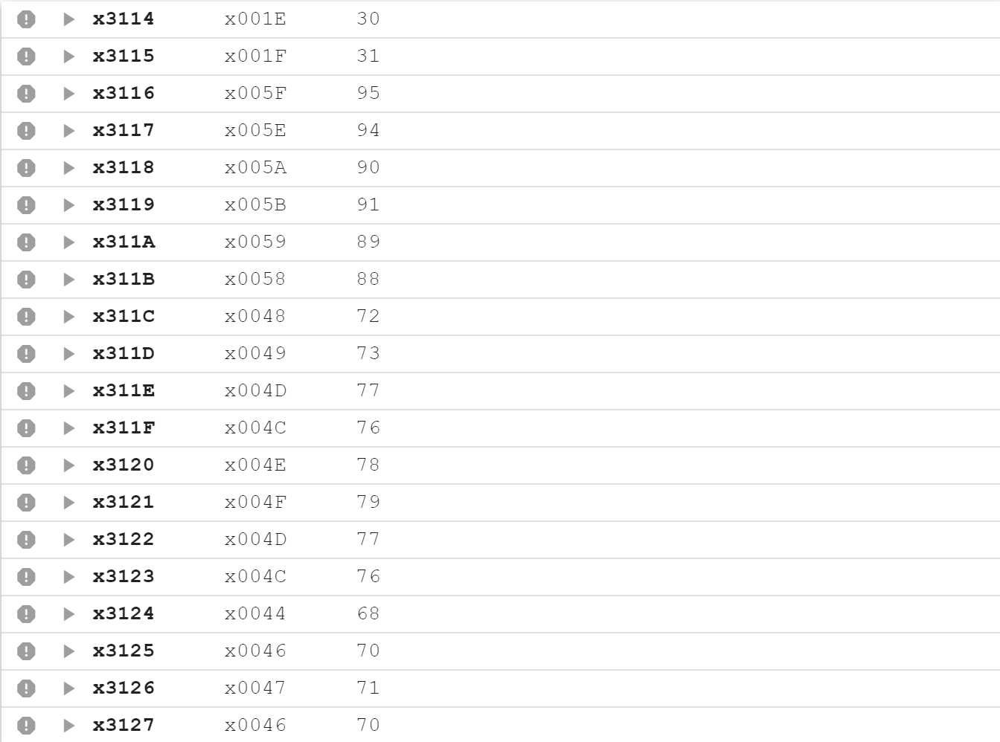 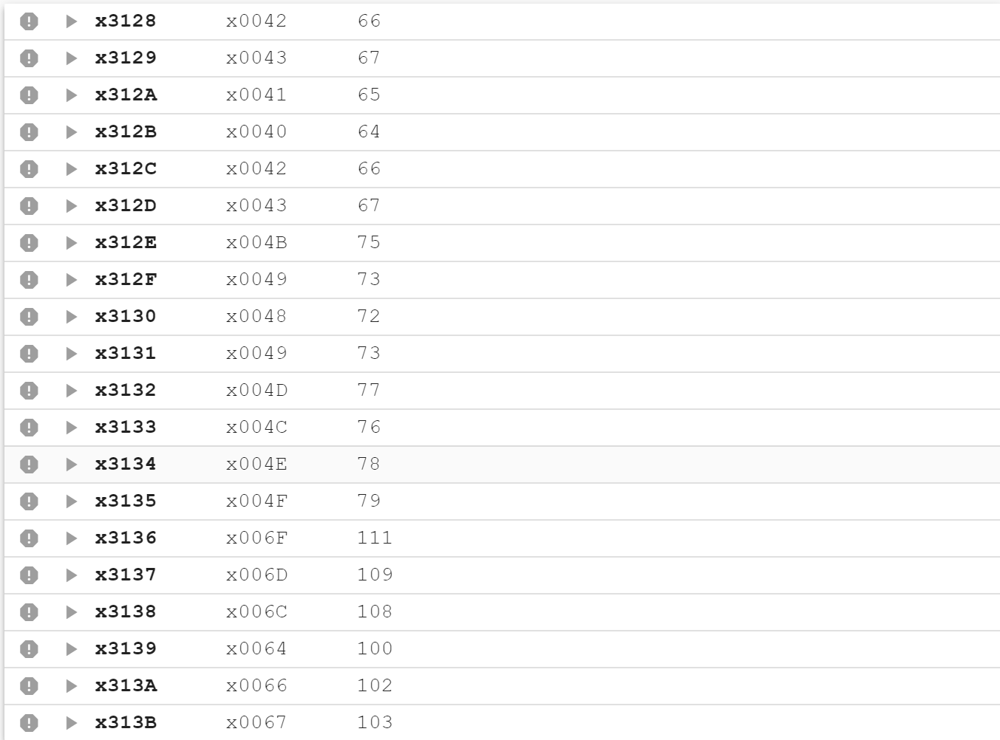 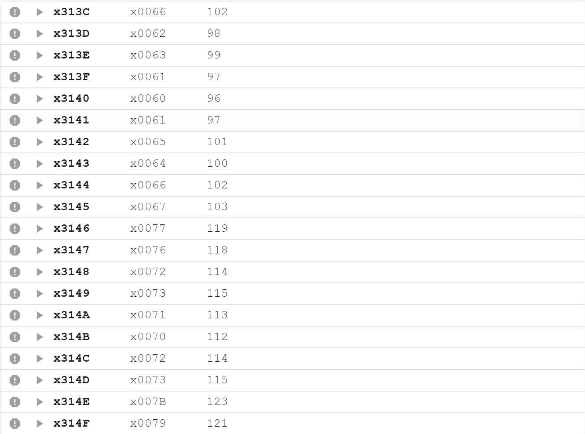 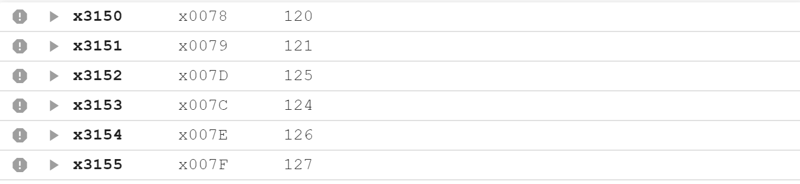
结果均正确！
由于n继续增大时，存储的state过多，所以就不截图展示了。